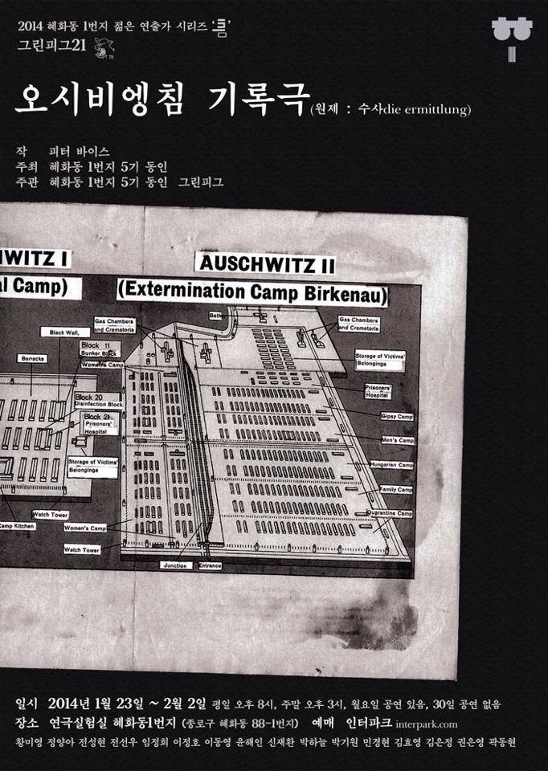
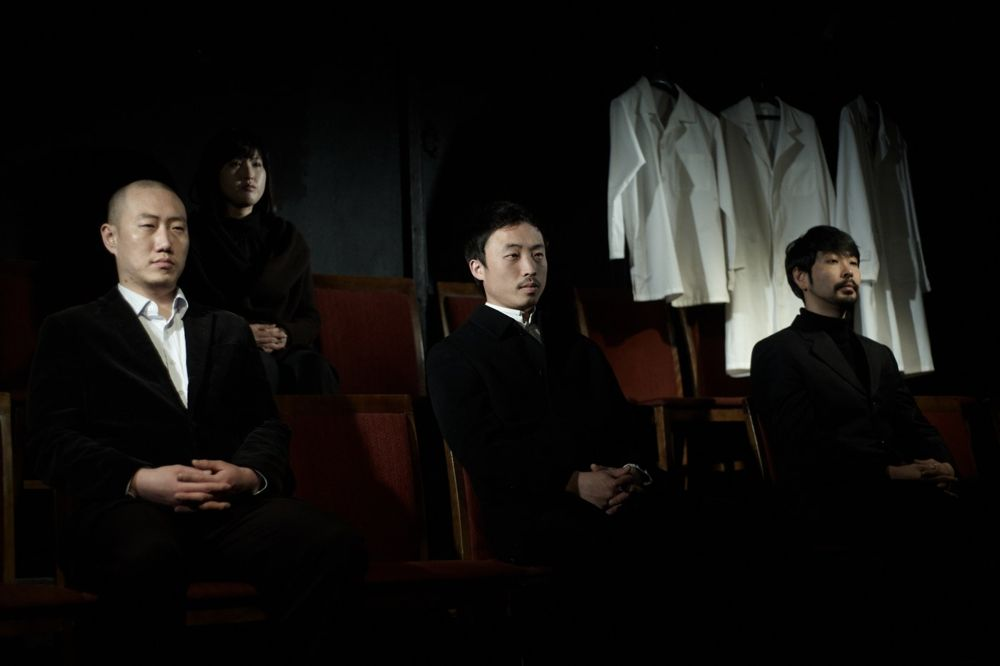

Green Pig > Archive > The Investigation (Oświęcim)


An adaptation, translated from the English version, of The Investigation, the documentary play Peter Weiss wrote from the records of the Frankfurt Auschwitz trials. It follows the form of documentary theater, minimizing artistic technique and putting the testimony itself onstage.
2014.1.23–2.2 / Theater Lab Hyehwa-dong 1beonji
Playwright: Peter Weiss
Director: Jeon Sunghyun
Music: Min Gyeonghyeon
Lighting: Yoon Haein
Poster: Kim Eunjeong
Photography: Park Jeonggeun
Performers: Hwang Miyeong, Jung Yanga, Jeon Seonu, Lim Jeonghui, Lee Jeongho, Lee Dongyeong, Shin Jaehwan, Park Haneul, Park Giwon, Kim Hyoyeong, Kwon Eunyeong, Kwak Donghyeon
Presented by: Hyehwa-dong 1beonji, 5th members
Organized by: Hyehwa-dong 1beonji, 5th members, Green Pig
Previous: Fear | Next: Young Fucidin
Back to the archive | Any work
Published 2026.11.13